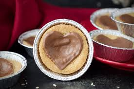

<!DOCTYPE HTML>
<html lang="en"></html>
<head>
    <link rel="stylesheet" href="style.css" />
    <style>
        @import url('https://fonts.googleapis.com/css2?family=Dancing+Script:wght@400..700&display=swap');
        </style>
         <title>Becca's recept</title>
</head>

<body>
    
    <h1 class="header">Becca's dumlekakor</h1>
    <p>Smörig text om receptet.</p>
    <section>
    <h4>Ingredienser:</h4>
    <ul>
        <li>200 g smör</li>
        <li>1 dl strösocker</li>
        <li>1 tsk bakpulver</li>
        <li>0,5 tsk salt</li>
        <li>3 dl (180 g) vetemjöl</li>
        <li>24 st dumlekolor</li>
        <li>24 st Noblesse</li>
    </ul>
    </section>

    <section>
        <h4>Utrustning:</h4>
        <ul>
            <li>24 st aluminiumformar</li>
            <li>elvisp</li>
        </ul>
    </section>

    <section>
        <h4>Ugn:</h4>
        <ul>
            <li>175 °C i mitten av ugnen i ca 10-12 minuter med över- och undervärme</li>
        </ul>
    </section>

    <section>
        <h4>Gör såhär:</h4>
            <ol>
                <li>Ställ upp runda aluminiumformar på en plåt.</li>
                <li>Mät upp smör och strösocker i en bunke. Låt stå framme i rumstemperatur en stund så att smöret blir mjukt. Rör sedan till en jämn smet. Det går bra att använda elvisp.</li>
                <li>Tillsätt bakpulver och salt. Blanda till en jämn smet. (Använd gärna elvisp.)</li>
                <li>Tillsätt vetemjöl. Blanda till en jämn kakdeg.
                    (Tänk på att inte gräva med decilitermåttet i mjölpåsen för då tar man oftast för mycket mjöl. Väg eller häll istället upp mjölet. Tar du för mycket mjöl blir det svårt att forma degen till kulor och dumlekakorna blir torrare.)</li>
                <li>Dela upp degen i 24 st (om du gör en sats) lika stora delar och forma till kulor. Lägg dem i aluminiumformarna.</li>
                <li>Tryck i en dumlekola i varje kaka.</li>
                <li>Grädda mitt i ugnen i 175°C ca 10-12 min, det ska bubbla lite i dumlekolan.</li>
                <li>Direkt efter att du tagit ut dumlekakorna ur ugnen, lägg på en noblesse (som då smälter).
                    Låt svalna tills chokladen stelnat. Klart!
                    Förvara dumlekakorna i kylskåp.</li>
            </ol>
    </section>

    <section>
        <h4>Tips!</h4>
        <p>Förvara dumlekakorna i kylskåp där de håller sig minst en månad. De kan även frysas men då brukar chokladen bli lite missfärgad så de blir inte lika fina då men håller sig minst 3 månader.</p>
    </section>
</body>